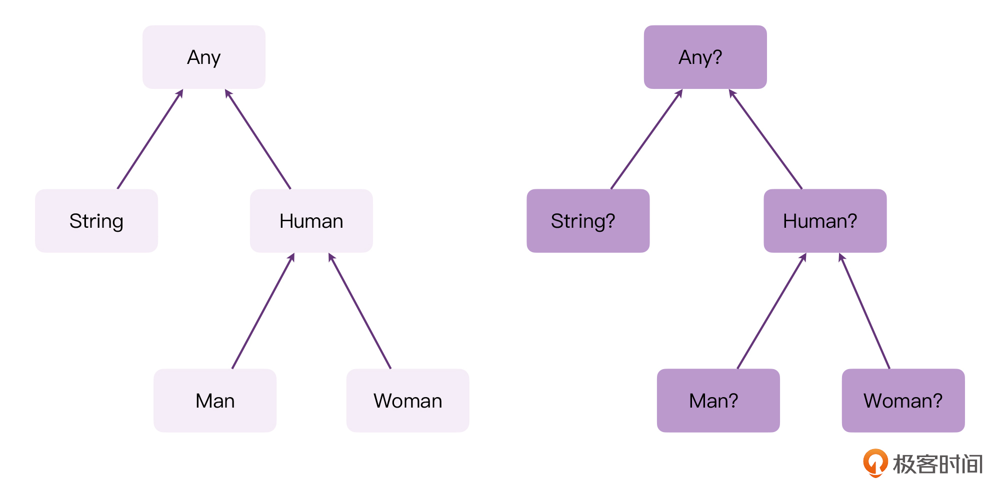
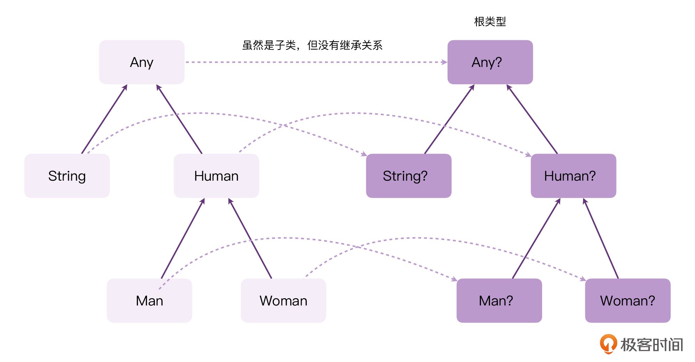
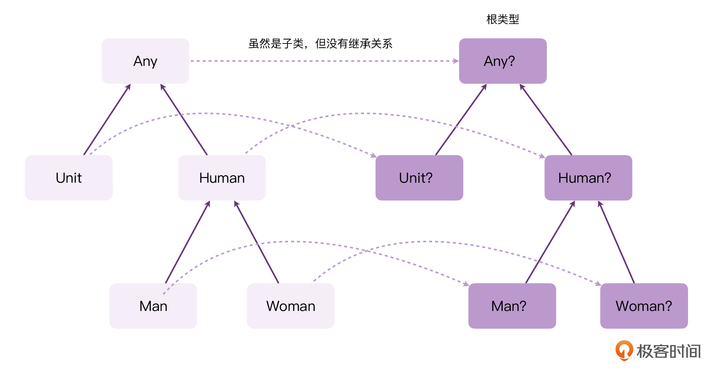
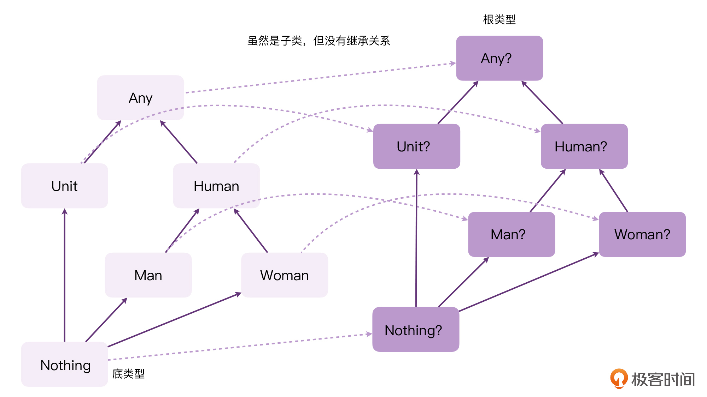
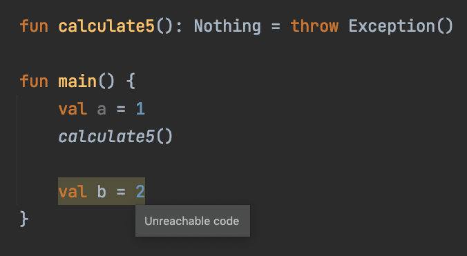

Audio加餐二丨什么是“表达式思维”？
你好，我是朱涛。
在开篇词当中，我曾经说过，学好 Kotlin 的关键在于思维的转变。在上一次加餐课程当中，我给你介绍了 Kotlin 的函数式编程思想，相信你对 Kotlin 的“函数思维”已经有了一定的体会。那么今天这节课，我们就来聊聊 Kotlin 的表达式思维。
所谓编程思维，其实是一种非常抽象的概念，很多时候是只可意会不可言传的。不过，从某种程度上看，学习编程思维，比学习编程语法还要重要。因为编程思维决定着我们的代码整体的架构与风格，而具体的某个语法反而没那么大的影响力。当然，如果对 Kotlin 的语法没有一个全面的认识，编程思维也只会是空中楼阁。
所以，准确地来说，掌握 Kotlin 的编程思维，是在掌握了 Kotlin 语法基础上的一次升华。这就好比是，我们学会了基础的汉字以后开始写作文一样。学了汉字以后，如果不懂得写作的技巧，是写不出优美的文章的。同理，如果学了 Kotlin 语法，却没有掌握它的编程思维，也是写不出优雅的 Kotlin 代码的。
好，那么接下来，我们就来看看 Kotlin 的表达式思维。
表达式思维
在正式开始学习表达式思维之前，我们先来看一段简单的 Kotlin 代码。
var i = 0
if (data != null) {
i = data
}
var j = 0
if (data != null) {
j = data
} else {
j = getDefault()
println(j)
}
var k = 0
if (data != null) {
k = data
} else {
throw NullPointerException()
}
var x = 0
when (data) {
is Int -> x = data
else -> x = 0
}
var y = 0
try {
y = "Kotlin".toInt()
} catch (e: NumberFormatException) {
println(e)
y = 0
}这些代码，如果我们用 Java 的思维来分析的话，是挑不出太多毛病的。但是站在 Kotlin 的角度，就完全不一样了。
利用 Kotlin 的语法，我们完全可以将代码写得更加简洁，就像下面这样：
val i = data ?: 0
val j = data ?: getDefault().also { println(it) }
val k = data?: throw NullPointerException()
val x = when (data) {
is Int -> data
else -> 0
}
val y = try {
"Kotlin".toInt()
} catch (e: NumberFormatException) {
println(e)
0
}这段代码看起来就简洁了不少，但如果你有 Java 经验，你在写代码的时候，脑子里第一时间想到的一定不是这样的代码模式。这个，也是我们需要格外注意培养表达式思维的原因。
不过，现在你心里可能已经出现了一个疑问：Kotlin 凭什么就能用这样的方式写代码呢？其实这是因为：if、when、throw、try-catch 这些语法，在 Kotlin 当中都是表达式。
那么，这个“表达式”到底是什么呢？其实，与表达式（Expression）对应的，还有另一个概念，我们叫做语句（Statement）。这两者的准确定义其实很复杂，你可以点击我这里给出的链接去看看它们之间区别。
不过我们可以先简单来概括一下：表达式，是一段可以产生值的代码；而语句，则是一句不产生值的代码。这样解释还是有些抽象，我们来看一些例子：
val a = 1 // statement
println(a) // statement
// statement
var i = 0
if (data != null) {
i = data
}
// 1 + 2 是一个表达式，但是对b的赋值行为是statement
val b = 1 + 2
// if else 整体是一个表达式
// a > b是一个表达式
// a - b是一个表达式
// b - a是一个表达式。
fun minus(a: Int, b: Int) = if (a > b) a - b else b - a
// throw NotImplementedError() 是一个表达式
fun calculate(): Int = throw NotImplementedError()这段代码是描述了常见的 Kotlin 代码模式，从它的注释当中，我们其实可以总结出这样几个规律：
赋值语句，就是典型的 statement；
if 语法，既可以作为语句，也可以作为表达式；
语句与表达式，它们可能会出现在同一行代码中，比如 val b = 1 + 2；
表达式还可能包含“子表达式”，就比如这里的 minus 方法；
throw 语句，也可以作为表达式。
但是看到这里，你的心中应该还是有一个疑问没有解开，那就是：calculate() 这个函数难道不会引起编译器报错吗？
// 函数返回值类型是Int，实际上却抛出了异常，没有返回Int
// ↓ ↓
fun calculate(): Int = throw NotImplementedError()确实，在刚开始接触 Kotlin 的时候，我也无法理解这样的代码。直到我弄清楚 Kotlin 整个类型系统以后，我才真正找到答案。
所以，为了让你能真正理解 Kotlin 表达式背后的原理，接下来，我们就来系统学习一下 Kotlin 的类型系统吧。
类型系统
在课程的第 1 讲我们就学过，在 Kotlin 当中，Any 是所有类型的父类，我们可以称之为根类型。同时，我们也学过，Kotlin 的类型还分为可空类型和不可空类型。举个例子，对于字符串类型，就有 String、String?，它们两者分别代表了不为空的字符串、可能为空的字符串。
在这个基础上，我们很容易就能推测出，Kotlin 的类型体系应该是这样的：

也就是，Any 是所有非空类型的根类型；而 Any? 是所有可空类型的根类型。那么现在，你可能会想到这样的一个问题：Any 与 Any? 之间是什么关系呢？
Any 与 Any? 与 Object
从表面上看，这两个确实没有继承关系。不过，它们之间其实是存在一些微妙的联系的。
在 Kotlin 当中，我们可以把“子类型”赋值给“父类型”，就像下面的代码一样：
val s: String = ""
val any: Any = s由于 String 是 Any 的子类型，因此，我们可以将 String 类型赋值给 Any 类型。而实际上，Any 和“Any?”之间也是类似的，我们可以将 Any 类型赋值给“Any？”类型，反之则不行。
val a: Any = ""
val b: Any? = a // 通过
val c: Any = b // 报错类似的，String 类型可以赋值给“String？”类型，反之也不行。你可能会想这是为什么呢？
其实，任何类型，当它被“?”修饰，变成可空类型以后，它就变成原本类型的父类了。所以，从某种程度上讲，我们可以认为“Any？”是所有 Kotlin 类型的根类型。它的具体关系如下图所示：

因此，我们可以说：虽然 Any 与 Any？之间没有继承的关系，但是我们可以将 Any 看作是 Any？的子类；String 类型可以看作是 String？的子类。
而由于 Any 与“Any？”之间并没有明确的继承关系，但它们又存在父子类型的关系，所以在上面的示意图中，我们用虚线来表示。
所以到这里，我们就弄明白了一个问题：Kotlin 的 Any 与 Java 的 Object 之间是什么关系？
那么，答案也是显而易见的，Java 当中的 Object 类型，对应 Kotlin 的“Any？”类型。但两者并不完全等价，因为 Kotlin 的 Any 可以没有 wait()、notify() 之类的方法。因此，我们只能说 Kotlin 的“Any？”与 Java 的 Object 是大致对应的。Intellij 有一个功能，可以将 Java 代码转换成 Kotlin 代码，我们可以借此印证。
这是一段 Java 代码，它有三个方法，分别是可为空的 Object 类型、不可为空的 Object 类型，以及无注解的 Object 类型。
public class TestType {
@Nullable // 可空注解
public Object test() { return null; }
public Object test1() { return null; }
@NotNull // 不可空注解
public Object test2() { return 1; }
}上面的代码转换成 Kotlin 以后，会变成这样：
class TestType {
fun test(): Any? { return null }
fun test1(): Any? { return null }
fun test2(): Any { return 1 }
}由此可见，在没有注解标明可空信息的时候，Object 类型是会被当作“Any？”来看待的。而在有了注解修饰以后，Kotlin 就能够识别出到底是 Any，还是“Any？”。
Unit 与 Void 与 void
在 Kotlin 当中，除了普通的 Any、String 的类型之外，还有一个特殊的类型，叫做 Unit。而 Unit 这个类型，经常会被拿来和 Java 的 Void、void 来对比。
那么在这里，你首先需要知道的是：在 Java 当中，Void 和 void 不是一回事（注意大小写），前者是一个 Java 的类，后者是一个用于修饰方法的关键字。如下所示：
public final class Void {
public static final Class<Void> TYPE = (Class<Void>) Class.getPrimitiveClass("void");
private Void() {}
}从语法含义上来讲，Kotlin 的 Unit 与 Java 的 void 更加接近，但 Unit 远不止于此。在 Kotlin 当中，Unit 也是一个类，这点跟 Void 又有点像。比如，在下面的代码中，Unit 是一个类型的同时，还是一个单例：
public object Unit {
override fun toString() = "kotlin.Unit"
}所以，我们就可以用 Unit 写出很灵活的代码。就像下面这样：
fun funUnit(): Unit { }
fun funUnit1(): Unit { return Unit }可以看到，当返回值类型是 Unit 的时候，我们既可以选择不写 return，也可以选择 return 一个 Unit 的单例对象。
另外，在使用泛型编程的时候，当 T 类型作为返回值类型的时候，我们传入 Unit 以后，就不再需要写 return 了。
interface Task<T> {
fun excute(any: Any): T
}
class PrintTask: Task<Unit> {
override fun excute(any: Any) {
println(any)
// 这里写不写return都可以
}
}更重要的是，Unit 还有助于我们实现函数类型。
val f: () -> Unit = {}所以，Kotlin 的 Unit 与 Java 的 Void 或者 void 并不存在等价的关系，但它们之间确实存在一些概念上的相似性。至此，我们也可以更新一下前面那个类型系统关系图了：

可见，Unit 其实和 String 类型一样，就是一个普通的类。只是因为 Kotlin 编译器会特殊对待它，当 Unit 作为返回值类型的时候，可以不需要 return。
好了，接着，我们再来看看 Kotlin 当中经常被提到的 Nothing 类型。
Nothing
在有了前面的基础以后呢，Nothing 就很容易理解了。其实，Nothing 就是 Kotlin 所有类型的子类型。
Nothing 的概念与“Any?”恰好相反。“Any?”是所有的 Kotlin 类型的父类，Nothing 则是所有类型的子类。如果用一张图来概括，大概会是这样的：

事实上，像 Nothing 这样的概念，在函数式编程当中，也被叫做底类型（Bottom Type），因为它位于整个类型体系的最底部。
而了解了 Kotlin 的 Nothing 类型以后，我们其实就可以尝试着来解答前面例子中留下来的疑问了：
// 函数返回值类型是Int，实际上却抛出了异常，没有返回Int
// ↓ ↓
fun calculate(): Int = throw NotImplementedError() // 不会报错
// 函数返回值类型是Any，实际上却抛出了异常，没有返回Any
// ↓ ↓
fun calculate1(): Any = throw Exception() // 不会报错
// 函数返回值类型是Unit，实际上却抛出了异常，没有返回Unit
// ↓ ↓
fun calculate2(): Unit = throw Exception() // 不会报错根据这段代码可以发现，不管函数的返回值类型是什么，我们都可以使用抛出异常的方式来实现它的功能。这样我们其实就可以推测出一个结论：throw 这个表达式的返回值是 Nothing 类型。而既然 Nothing 是所有类型的子类型，那么它当然是可以赋值给任意其他类型的。
可是，我们如何才能印证这个结论是否正确呢？很简单，我们可以把两个函数的返回值类型都改成 Nothing，然后看看编译器会不会报错：
// 不会报错
fun calculate(): Nothing = throw NotImplementedError()
// 不会报错
fun calculate1(): Nothing = throw Exception()
// Nothing构造函数是私有的，因此我们无法构造它的实例
public class Nothing private constructor()可见，编译器仍然不会报错。这也就印证了我们前面的猜测：throw 表达式的返回值类型是 Nothing。
另外，我们应该也注意到了 Nothing 类的构造函数是私有的，因此我们无法构造出它的实例。而当 Nothing 类型作为函数参数的时候，一个有趣的现象就出现了：
// 这是一个无法调用的函数，因为找不到合适的参数
fun show(msg: Nothing) {
}
show(null) // 报错
show(throw Exception()) // 虽然不报错，但方法仍然不会调用这里我们定义的这个 show 方法，它的参数类型是 Nothing，而由于 Nothing 的构造函数是私有的，这就导致我们将无法调用 show 这个函数，除非我们抛出异常，但这没有意义。这个概念在泛型星投影的时候是有应用的，具体你可以点击这个链接去查看详情。
而除此之外，Nothing 还有助于编译器进行代码流程的推断。比如说，当一个表达式的返回值是 Nothing 的时候，就往往意味着它后面的语句不再有机会被执行。如下图所示：

在了解了 Unit 与 Nothing 这两个不可空的类型以后，我们再来看看它们对应的可空类型。
Unit? 与 Nothing?
也许你也注意到了，Unit 对应的还有一个“Unit?”类型，那么这个类型有什么意义吗？
我们可以看看下面的代码：
fun f1(): Unit? { return null } // 通过
fun f2(): Unit? { return Unit } // 通过
fun f3(): Unit? { throw Exception() } // 通过
fun f4(): Unit? { } // 报错，缺少return可见，Kotlin 编译器只会把 Unit 类型当作无需返回值的类型，而 Unit? 则不行。
所以，Unit? 这个类型其实没有什么广泛的应用场景，因为它失去了原本的编译器特权后，就只能有 3 种实现方式，即 null、Unit 单例、Nothing。也就是说，当 Unit? 作为返回值的时候，我们的函数必须要 return 一个值了，它返回值的类型可以是 null、Unit 单例、Nothing 这三种情况。
好，接下来我们再来看看“Nothing?”这个类型。
fun calculate1(): Nothing? = null
fun calculate2(): Nothing? = throw Exception()由以上代码示例可知，当 Nothing? 作为返回值类型的时候，我们可以返回 null，或者是抛出异常。这一切都符合预期，而当它作为函数参数的时候，也会有一些有趣的变化。
// 变化在这里
// ↓
fun show(msg: Nothing?) {
}
show(null) // 通过
show(throw Exception()) // 虽然不报错，但方法仍然不会调用可以看到，当参数类型是 Nothing? 的时候，我们的函数仍然是可以调用的。这其实就能进一步说明一个问题：Nothing 才是底类型，而“Nothing?”则不是底类型。
这一点其实在前面的类型关系图中就有体现，现在你就可以真正理解了：

到这里相信你也明白了，“Unit?”“Nothing?”这两个类型，其实并没有太多实际的应用场景，不过由于它们是 Kotlin 类型系统当中特殊的类型，因此我们也应该对它们有个清晰的认识。
这样，在系统学习了 Kotlin 的类型系统以后，我们对表达式理解就可以更上一层楼了。
表达式的本质
我们再来看看表达式的定义：表达式，是一段可以产生值的代码；而语句，则是一句不产生值的代码。
也许你听说过这样一句话：在 Kotlin 当中，一切都是表达式。注意！这句话其实是错的。因为 Kotlin 当中还是存在语句的，比如 while 循环、for 循环，等等。
不过，如果我们换个说法：在 Kotlin 当中，大部分代码都是表达式。这句话就对了。Kotlin 的类型系统当中的 Unit 和 Nothing，让很多原本无法产生返回值的语句，变成了表达式。
我们来举个例子：
// statement
println("Hello World.")
// println("Hello World.") 变成了表达式
val a = println("Hello World.")
// statement
throw Exception()
// throw 变成了表达式
fun test1() = throw Exception()从上面的代码案例中，我们可以总结出两个规律。
由于 Kotlin 存在 Unit 这个类型，因此 println(“Hello World.”) 这行代码也可以变成表达式，它所产生的值就是 Unit 这个单例。
由于 Kotlin 存在 Nothing 这个类型，因此 throw 也可以作为表达式，它所产生的值就是 Nothing 类型。
注意，因为 Java 当中不存在 Unit、Nothing 这样的类型，所以 Java 里返回值为 void 的函数是无法成为表达式的，另外，throw 这样的语句也是无法成为表达式的。而也正是因为 Kotlin 这样的类型系统，才让大部分的语句都摇身一变成为了表达式。因为 Unit、Nothing 在 Kotlin 编译器看来，也是所有类型当中的一种。
可以说，Unit 和 Nothing 填补了原本 Java 当中的类型系统，让 Kotlin 的类型系统更加全面。也正因为如此，Kotlin 才可以拥有真正的函数类型，比如：
val f: (String) -> Unit = ::println可以看到，如果不存在 Unit 这个类型，我们是无法描述 println 这个函数的类型的。正因为 println 函数的返回值类型为 Unit，我们才可以用“(String) -> Unit”来描述它。
换句话说就是：Kotlin 的类型系统让大部分的语句都变成了表达式，同时也让无返回值的函数有了类型。
而所谓的表达式思维，其实就是要求我们开发者在编程的时候，时刻记住 Kotlin 大部分的语句都是可以作为表达式的，并且由于表达式都是有返回值的，这也就让我们可以用一种全新的思维来写代码。这在很多时候，都可以大大简化我们的代码逻辑。
那么现在，我们再回过头看之前的代码，就会觉得很顺眼了：
val i = data ?: 0
val j = data ?: getDefault().also { println(it) }
val k = data?: throw NullPointerException()
val x = when (data) {
is Int -> data
else -> 0
}
val y = try {
"Kotlin".toInt()
} catch (e: NumberFormatException) {
0
}小结
好，今天这节加餐，到这里就接近尾声了，我们来做个简单的总结。
所谓的表达式思维，就是要时刻记住：Kotlin 大部分的语句都是表达式，它是可以产生返回值的。利用这种思维，往往可以大大简化代码逻辑。
Any 是所有非空类型的根类型，而“Any?”才是所有类型的根类型。
Unit 与 Java 的 void 类型，代表一个函数不需要返回值；而“Unit?”这个类型则没有太多实际的意义。
当 Nothing 作为函数返回值的时候，意味着这个函数永远不会返回结果，而且还会截断程序的后续流程。Kotlin 编译器也会根据这一点，进行流程分析。
当 Nothing 作为函数参数的时候，就意味着这个函数永远无法被正常调用。这在泛型星投影的时候是有一定应用的。
另外，Nothing 可以看作是“Nothing?”子类型，因此，Nothing 可以看作是 Kotlin 所有类型的底类型。
正是因为 Kotlin 在类型系统当中，加入了 Unit、Nothing 这两个类型，才让大部分无法产生值的语句摇身一变，成为了表达式。这也是“Kotlin 大部分的语句都是表达式”的根本原因。
思考题
这节课，我们学习了表达式思维，请问，你觉得它和我们前面学到的“函数式编程”有联系吗？为什么？欢迎在留言区分享你的答案和思考，也欢迎你把今天的内容分享给更多的朋友。
COMMUNITY NOTES
读者评论
这篇文章暂时没有读者留言。